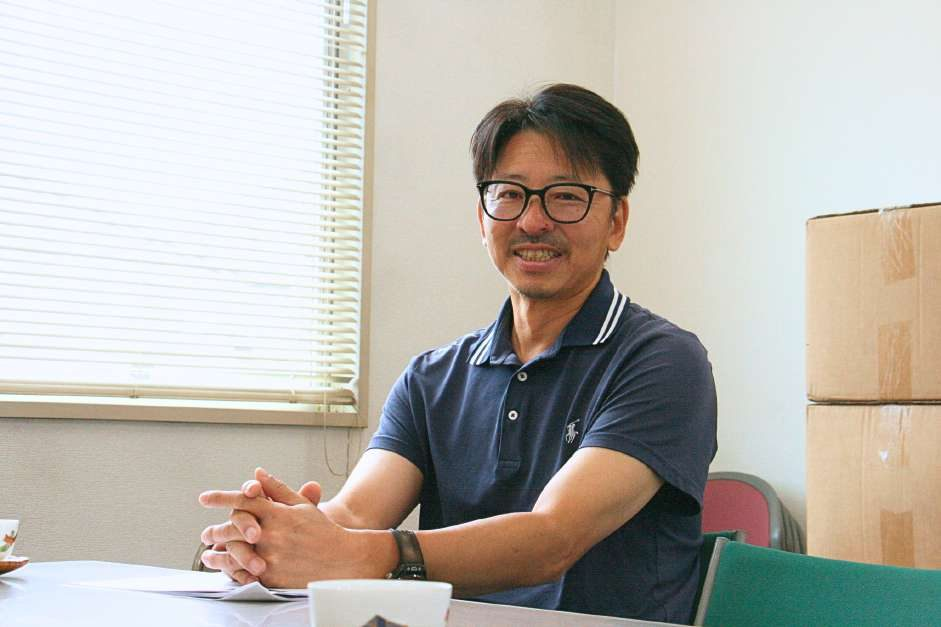

人とのつながり
仕事を任せてくださる方、現場を支える方、地域で暮らす方。多くの人との関係を大切にして仕事を進めます。

代表取締役 川島 和範
MESSAGE 代表メッセージ
道路を安全に通れること。蛇口をひねれば水が使えること。普段の生活では意識する機会が少ないかもしれませんが、私たちの仕事は、そうした毎日を支えています。
久留米興業は、1974年の設立以来、ガス管取替後の舗装復旧や水道工事、路面の改良・維持などに携わってきました。工事は現場で作業する人だけで完結するものではありません。取引先、協力会社、地域の方々の理解と協力があって、一つの仕事を完成させることができます。
私自身、現場の作業から仕事を始め、管理や取引先との関係づくり、そして経営を経験してきました。立場が変わるにつれて、それぞれの仕事の大変さと、人とのつながりの大切さを感じるようになりました。
長年の経験や信頼を大切にしながら、時代に合わせて変えるべきところは見直す。社員が長く働き、取引先からも地域の方々からも頼っていただける会社であり続けたいと考えています。
これからも、私たちにできる仕事を一つひとつ積み重ねてまいります。
株式会社久留米興業 代表取締役 川島 和範
OUR PRINCIPLES 大切にしていること
現場では、一人ひとりの役割と、周囲との連携が必要です。取引先や協力会社、地域の方々との関係も、その仕事を支えています。久留米興業は、互いの立場を理解し、一つひとつの仕事を誠実に進める姿勢を大切にしてきました。
仕事を任せてくださる方、現場を支える方、地域で暮らす方。多くの人との関係を大切にして仕事を進めます。
現場の安全や段取りに目を向け、職種が違っても必要な情報をつなぎ、確かな施工を積み重ねます。
これまで培った経験を守りながら、今の働く人と仕事に合う形を考え続けます。
HISTORY 会社の歩み
久留米興業は、1974年3月4日に設立されました。道路舗装や水道、公共インフラの工事を通して、地域の暮らしに関わる仕事を続けています。今も必要とされる工事を担いながら、次の世代へ何を残していくかを考えています。
3月4日設立。
10月30日設立。久留米興業とは別の会社です。
ガス管取替後の復旧舗装、路面改良・維持、水道工事などに携わっています。
2024年の能登半島地震に伴う救援活動は、活動内容と写真の公開範囲を確認できたら年表に追加します（久留米興業についてのページでは記事へのリンクとして掲載）。
COMPANY PROFILE
| 会社名 | 株式会社久留米興業 |
|---|---|
| 代表者 | 代表取締役 川島 和範 |
| 設立 | 1974年3月4日 |
| 所在地 | 〒157-0061 東京都世田谷区北烏山6丁目26-28 |
| 資本金 | 20,000,000円 |
| 電話番号 | 03-3309-3786 |
| 主要事業 | ガス管取替後の復旧舗装工事、路面改良・維持、水道工事、一般土木、下水道工事 |
| 関連会社 | KRM株式会社 |
| 建設業許可 | 【確認待ち】 |
| 従業員数 | 【確認待ち】 |
GROUP COMPANY 関連会社
久留米興業の関連会社であるKRM株式会社は、世田谷区北烏山に拠点を置き、道路工事に用いるアスファルト合材や再生砕石などの販売、残土やアスファルトガラなどの受け入れを行っています。道路を整える仕事と、それに必要な資材を扱う仕事。それぞれの役割から、地域の建設・舗装の現場を支えています。
〒157-0061 東京都世田谷区北烏山6丁目26-28（久留米興業 敷地内）
設立：2018年10月30日
代表取締役：川島 和範
再生密粒アスファルト合材、再生砕石、改良土、川砂
残土、アスファルトガラ、コンクリートガラ
KRMの電話番号は掲載先によって異なる（…5222／…5221）ため、確認できるまで表示していません。
ACCESS
株式会社久留米興業の本社は、東京都世田谷区北烏山にあります。面接やご訪問の際は、目的に応じた窓口へ事前にご連絡ください。
地図
東京都世田谷区北烏山6丁目26-28Googleマップで場所を確認する （外部サイトが開きます）事業の背景を知る、働く人の声を知る、具体的な仕事や募集条件を確かめる。気になる情報からご覧ください。